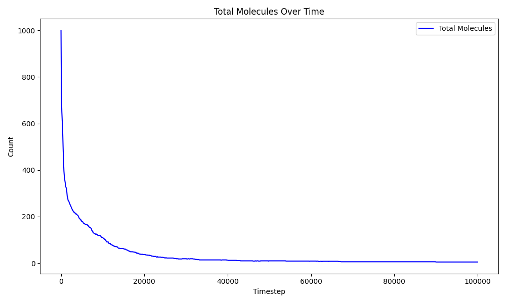

Fe–O Nanoparticle Formation Using ReaxFF
Simulation Setup
This simulation studies the reactive aggregation behavior of iron and oxygen atoms using ReaxFF molecular dynamics in LAMMPS.
The system contains:
- 500 Iron atoms
- 500 Oxygen atoms
Initial atomic velocities were assigned at: \( T = 1000\ \text{K} \) and this temperature is kept fixed throughout the simulation.
Timestep \( \Delta t = 0.25\ \text{fs} \) was used. So the total simulation duration is \( 25\ \text{ps} \).
Trajectory Visualization
The atomic trajectories were visualized using OVITO.
Initially, iron and oxygen atoms are randomly distributed throughout the simulation box. However, shortly after the simulation begins, atoms rapidly start clustering together.
Small Fe–O aggregates form first, followed by continuous merging into larger condensed structures.
Molecule Evolution
One of the clearest indicators of aggregation is the rapid decrease in the total number of molecular fragments during the simulation.
At the beginning, the system behaves almost like an atomic gas with nearly:
\[ \sim 1000 \]
individual molecular fragments.
As the simulation progresses, the number of molecules drops rapidly due to reactive clustering and particle growth.
Eventually, \(Fe_{500}O_{496}\) has been formed, indicating near-complete nanoparticle formation.

The sharp decline in molecule count during the early stage shows that aggregation occurs extremely quickly at 1000 K.
Why Does Iron React So Quickly with Oxygen?
Iron has a very strong chemical affinity for oxygen.
At high temperature, atoms possess large kinetic energy, causing frequent collisions between Fe and O atoms inside the simulation box.
Once atoms come sufficiently close, strong Fe–O bonds begin forming, lowering the total potential energy of the system.
This energetic stabilization drives rapid aggregation.
Instead of remaining isolated, atoms continuously combine into larger oxide clusters because those structures are thermodynamically more stable.
As clusters grow larger, they effectively behave like nanoscale iron oxide particles.
This is why the simulation naturally evolves from dispersed atoms into condensed Fe–O nanoparticles within only a few picoseconds.
ReaxFF is particularly useful here because it dynamically forms and breaks chemical bonds during the simulation without requiring any predefined molecular structures.
All simulation files, analysis scripts, and visualization tools are available at GitHub.